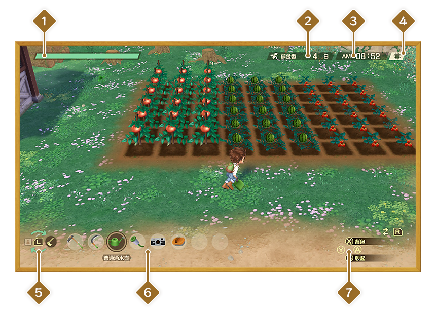

游戏界面
注：本攻略中介绍的游戏操作基于 Nintendo Switch™ 版《牧场物语 Welcome！美丽人生》。
其他版本请以实际游戏为准。
基本界面

- 体力
主角的体力。体力归零时主角会当场倒地，并在三个小时后醒来。
- 季节与日期
当前的季节与日期。不同季节能够种植的农作物与结出果实的果树也会发生变化。
- 时间
当前时间。
- 天气
当前天气。
- 道具切换
共有五列，用方向键上下可以切换不同的道具栏。
- 迷你背包
当前所选列的道具。用方向键左右能够切换道具，按Y键可以使用道具。
- 操作指南
进行A、B、X、Y键对应的操作。
背包菜单
按  会显示背包菜单，能够进行整理道具、查看居民好感度等操作。
会显示背包菜单，能够进行整理道具、查看居民好感度等操作。
牧场信息
能够查看主角的状态、找到的美好以及出货信息。
背包的操作
在背包中可以查看持有道具的说明或替换道具。此外，还可以按 丢弃道具，按
丢弃道具，按 整理道具。
整理道具。
系统菜单
在基本界面按，便会打开系统菜单。
- 写日记：保存当前的游玩进度。
- 阅读日记：读取保存的数据。
- 塔卡克拉的笔记：查看关于牧场生活的说明。
- 设置：更改游戏内的相关设置。
- 返回标题：结束当前游戏，不保存并返回标题界面。